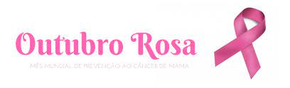
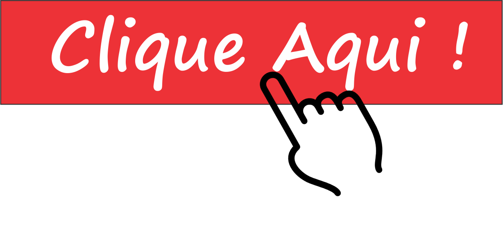

O mês de Outubro já é conhecido mundialmente como um mês marcado por ações afirmativas relacionadas à prevenção e diagnóstico precoce do câncer de mama.
O movimento, conhecido como Outubro Rosa, é celebrado anualmente desde os anos 90. O objetivo da campanha é compartilhar informações sobre o câncer de mama e,
mais recentemente, câncer do colo do útero, promovendo a conscientização sobre as doenças, proporcionando maior acesso aos serviços de diagnóstico e
contribuindo para a redução da mortalidade.
Dicas de como se prevenir.
